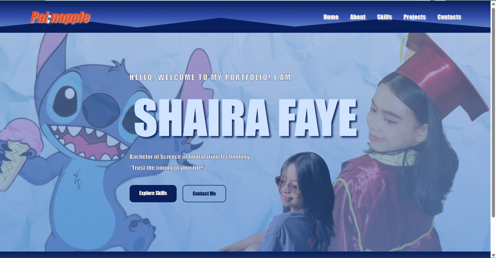
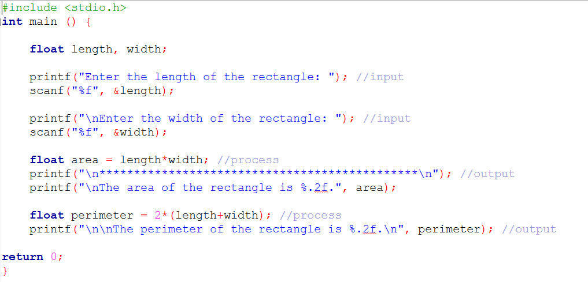
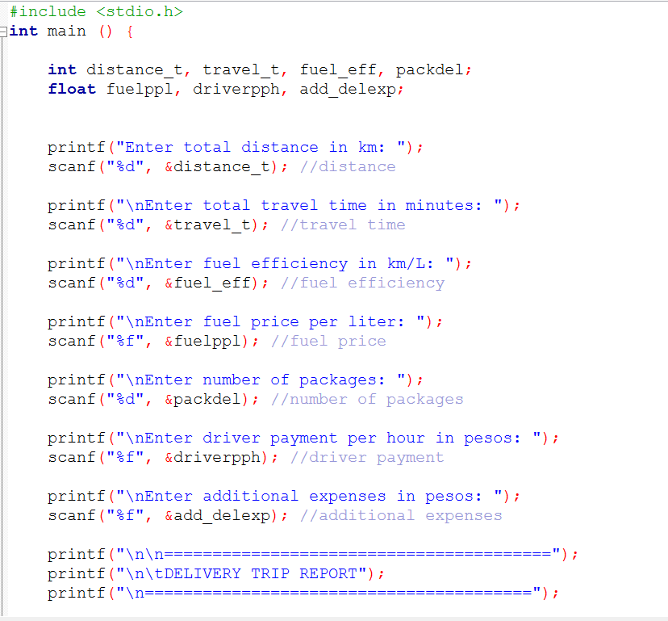

OPEN PROJECT ↗WEB DESIGN
Personal Portfolio
A portfolio website that introduces me, presents my skills and education, and showcases selected works and ways to connect.
Visit project↗RECENT WORK

OPEN PROJECT ↗WEB DESIGN
A portfolio website that introduces me, presents my skills and education, and showcases selected works and ways to connect.
Visit project↗
OPEN PROJECT ↗CODING PROJECT 02
Computer Programming laboratory activity practice set. This helped me slowly understand the concept of C-language.
Visit project ↗
OPEN PROJECT ↗CODING PROJECT 03
My major activity in Coding focuses on applying my knowledge. It helped me improve my problem-solving skills, creativity, and understanding of web development.
Visit project ↗